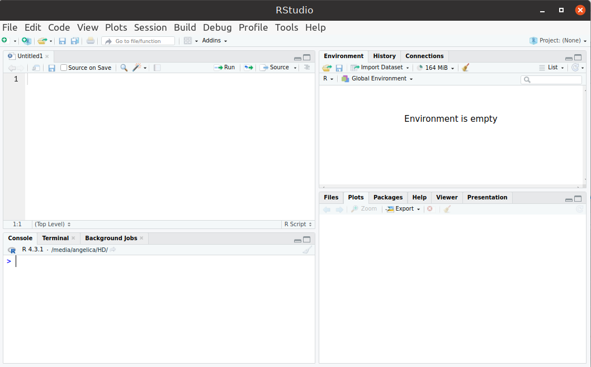
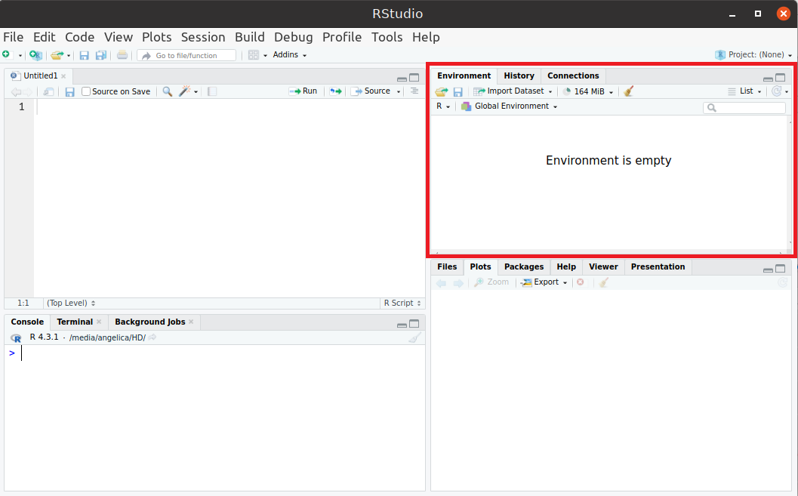
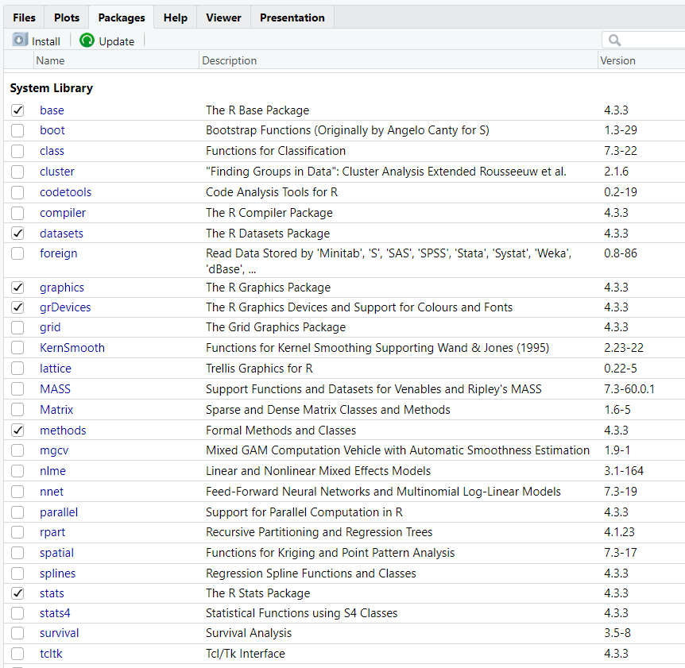

Introdução ao R e RMarkdown
2024-04-09
Capítulo 1 Introdução
1.1 Sobre o R e RStudio
O R é uma poderosa linguagem de programação e um software voltado para análises estatísticas de dados. É de código aberto, sendo gratuito e de livre distribuição, e amplamente utilizado por pesquisadores, professores e estudantes. Disponível para diferentes sistemas operacionais, conta com inumeros pacotes que disponibilizam funções e dados estatisticos que podem ser utilizados e manipulados. Junto ao R o RStudio é utilizado como ambiente de desenvolvimento integrado, permitindo uma abordagem mais flexível na utilização da linguagem R.
1.2 Referências/Fontes de ajuda
Livros
- Livro: R Cookbook (Teetor 2011)
- Livro: R for Data Science (Wickham 2017)
- Livro: The Book of R: A First Course in Programming and Statistics (Davies 2016)
- Livro: Hands-On Programming with R: Write Your Own Functions and Simulations (Grolemund 2015)
- Livro: Learning R: A Step-by-Step Function Guide to Data Analysis (Cotton 2013)
Páginas de ajuda
Outros materiais podem ser encontrados em: R Contributed Documentation.
1.3 Instalação do R
Disponivel para Windows, macOS e Linux a instalação do R é simples basta seguir o seguinte passo-a-passo.
- Visitar o site do R: https://cran.r-project.org/
- Clicar no link referente ao sistema operacional correspondente
- Fazer a instalação de acordo com as instruções

1.4 Instalação do RStudio
Após a instalação do R seguir o seguinte passo-a-passo para a instalação do Rstudio.
- Visitar a página do RStudio.
- Fazer o download do arquivo referente ao sistema operacional correspondente.
- Fazer a instalação de acordo com as instruções.

1.5 Estrutura básica
Após a instalação do Rstudio é necessário se familiarizar com o ambiente que ele apresenta. Inicianmente o Rstudio é dividido em quatro janelas.

A janela no canto superior esquerdo são onde se encontram os arquivos, scripts e documentos que estão sendo utilizados.

A janela inferior esquerda é a janela de comandos, chamada Console, talvez a janela que mais será utilizada pelo usuário. Nesta janela é possível executar operações básicas de aritmetica, executar funções e comandos, definir variáveis, executar scripts entre outras possibilidades.

A janela superior direta é utilizada principalmente para visualizar as variáveis, na aba Environment, que já forma definidas e estão sendo utilizadas no momento. É possível visualizar também o histórico de comandos que foram executados na aba History.

Por último, a janela inferior esquerda possui varias abas importantes. Na aba Files é possível visualizar o seu diretorio de trabalho que são os arquivos que ficam slavos no seu computador e podem ser acessados no Rstudio. A aba Plots disponibiliza os gráficos e plotagens que foram feitos durante a execução do programa. Na aba Packages é possivel visualizar todos os pacotes disponiveis no Rstudios. Caso precise de ajuda para entender um comando, função ou pacote específico a aba Help pode ser usada, nesta aba será disponibilizado informações sobre a função, comando ou pacote desejado.

Para utilizar alguns comandos em R talves seja necessario instalar um pacote específico. A aba Packages apresenta uma lista de todos os pacotes disponiveis junto com uma frase resumindo sua utilidade.

Para instalar um pacote é necessário utilizar o comando library(nome do pacote) na janela de comando. Caso queira mais informações sobre um pacote utilize o comando help("nome do pacote") e ?nome e mais informações irão aparecer na aba Help.
1.6 Introdução à linguagem R
Para executar operações aritméticas básicas basta utilizar os operadores: (+) soma, (-) subtração, (*) multiplicação, (/) divisão e (%%) resto da divisão. Isso permite que o R se comporte como uma calculadora, por exemplo a expressão a seguir
## [1] 27irá resultar no valor 27.
Também é possível realizar operações lógicas utilizando os operadores: (==) igualdade, (!=) diferença, (>) menor, (<) maior, (>=) menor igual, (<=) maior igual. O resultado dessa operação é valor booleano TRUE ou FALSE. Por exemplo a comparação
a <- 3*9+4/2-58%%4
a%%3 == 0
resulta em TRUE pois o resto da divisão de 27 por 3 é zero.
Perceba que no exemplo o valor da expressão foi armazenado na variável a, e essa variável foi usada para realizar a operação de comparação. Em R é possível utilizar o operador <- para armazenar um valor em uma variável e utilizar essas variáveis para realizar operações durante a execução dos códigos.
a <- 3
b <- 2
c <- a-b
A variável c irá receber o valor de a-b = 1, caso a ou b sejam alterados o valor de c também se altera.